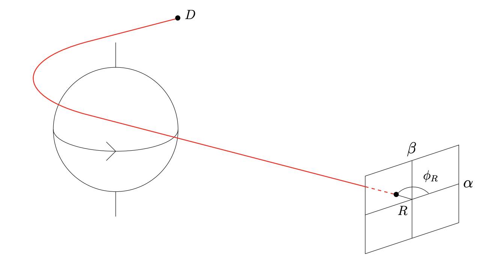
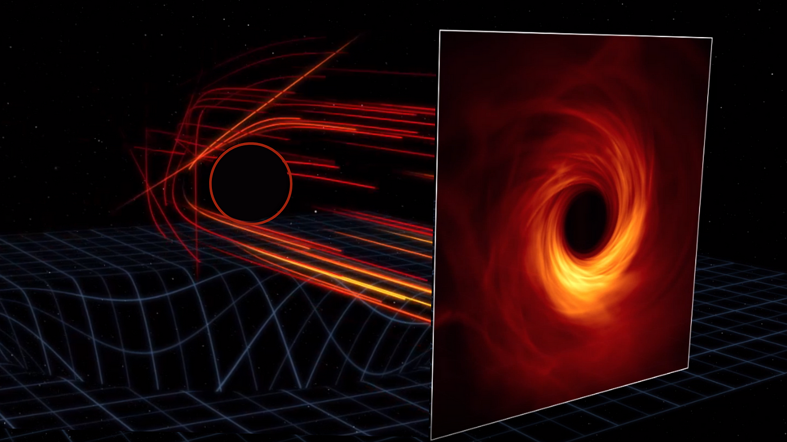

You may have noticed there’s been a bit of a break in the blog! I was out of town for a while and not updating the blog super regularly, but rest assured that over the next few days I’ll be updating you on all the material I’ve read and produced over the past few weeks!
In our last blog post, I teased that we would finally begin connecting our theoretical backgrounds to current work in black hole imaging, so that’s exactly what we’ll be doing today. All our work regarding general relativity has been highly general and theoretical, but we need to actually begin applying it to observables! In particular, we set out to study black holes, so we need to somehow connect the experimental observations and theoretical predictions of black holes to each other.
This turns out to be very difficult on both fronts: making theoretical predictions about black holes is highly nontrivial because the gravity around black holes is strong enough that general relativity must unavoidably be used, and the mathematics of general relativity (which we have already seen a glimpse of) can be quite complicated. To add to this difficulty, however, the experimental observation of black holes is very nearly impossible. First of all, as we have brought up before, black holes are black: technically, the “interesting” part of a black hole is complete unobservable. The singularity and the region of space around the singularity are “censored” by the presence of the event horizon due to the finite speed of light: photons very close to the singularity are unobservable to us. However, photons that are a little more distant from the black hole (the nearly bound photons we have been alluding to thus far) are more reasonable to observe. The engineering and mathematical challenges posed by attempting to observe these photon rings are of course still massive; most of the black holes we have attempted to observe are millions of light years away and capturing high-resolution, high-fidelity information from such distant objects is an extremely nontrivial task, and was the primary driving motivation of the Event Horizon Telescope collaboration.
But assuming we manage to work out the theoretical description of what a black hole should look like from far away, and we make real experimental observations of what a black hole actually does look like from far away, what can we expect to see and how can we compare the two?
Photon Rings
Consider a black hole in the vacuum of space, and consider a sheet placed arbitrarily far away, which collects the photons that come from the black hole to form an image. What will this sheet see?

Well, one can imagine that there are some photons that are far away enough from the black hole that they are barely affected by the black hole. We will call these (for reasons that will soon become obvious) photons. You can likely guess that a ring of photons that are equidistant from the black hole would be affected by it in the same way (due to the radial symmetry of this system), so we can say these photons form a “ring” around the black hole. (Technically photons unaffected by the black hole would have to be infinitely far away, but as we will see shortly, what we call photons don’t have to be completely unaffected, just unaffected to a certain degree). Now imagine a photon that is slightly closer to the black hole, such that it comes from behind the black hole, is strongly pulled towards it and travels around it once before making its way to our screen. This is an photon. These photons, by the same reasoning as above, also form a ring around the black hole. Now imagine a photon slightly closer, so that it has to orbit twice around the black hole until escaping to our screen. You may have guessed these are the photons, and they also form a ring around the black hole. (A technical note: according to typical conventions, does not actually count the number of orbits but rather the number of half-orbits.) The image below, from an animation by the Institute of Advanced Study, might help you visualize more clearly how these photon rings are formed:

What we have shown (somewhat unrigorously, part of my project is to show this much more rigorously using the metric of a black hole) that when placing a screen “infinitely” far away from a black hole, what you can see, while not the black hole itself, is a series of concentric rings containing photons that have “wrapped around” the black hole different numbers of times. (In particular, we can show these rings get thinner and thinner, and that there are infinitely many of them.) In fact, one can show that all ideal black hole images will look exactly like this (via the no-hair theorem, which states that black holes have no extraneous properties). Even more usefully, the exact structure of these rings (more precisely, their relation to one another) depends, perhaps strongly, on the properties of the black hole (the strength of dependence of this structure on particular parameters of the black hole is another very strong interest of this project, in addition to merely the dependence itself). In particular, we can show that the three properties of a black hole (mass, charge, and angular momentum, according to the no-hair theorem) manifest in three critical exponents that parameterize the structure of these photon rings. We call these three critical exponents , , and , and deriving these critical exponents in terms of the properties of a black hole for the most general metrics possible is the primary focus of this senior project.
The Critical Exponents
Recall that the “photon ring” of a black hole is not in fact one ring but an infinite series of concentric, self-similar photon rings, as we described above. The appearance of a particular photon ring depends less on the black hole itself and more on the photons (the black hole’s structure, of course, will not determine the wavelength or other properties of this ring). What the black hole itself determines is how these photon rings are related to one another. Each self-similar ring is identical to the previous ring, except for three distinctions: it is “demagnified” (less bright), it is rotated, and it is delayed in time (the photons from that ring took longer to reach our arbitrarily far screen than the previous ring’s photons did). This is what the three critical exponents parameterize. In particular, the th ring will be demagnified by a factor of , rotated through an angle of radians, and shifted in time by (in natural units) from the th ring (, the most well studied of the critical exponents, even has its own name—the Lyapunov exponent). By studying the most general possible metric of a black hole (one that accounts for mass, spin, and charge), we can derive highly general expressions for each of these three critical exponents, and compare them to the critical exponents we observe in black hole images in order to deduce the parameters of the black hole purely from the image (and even to test whether or not the exponents take the form that we expect them to—a promising test of the no-hair theorem and of general relativity more broadly). However, measuring these critical exponents for real black holes turns out to be a highly nontrivial problem.
Autocorrelations
Of course, if we had telescopes of infinite precision and were measuring ideal black holes, once a black hole was imaged, extracting these critical exponents would be a trivial matter. However, real black holes are surrounded not by ideal photons but by complex mixtures of gas and plasma that behave irregularly and noisily. But the concentric rings formed by geodesics orbiting the black holes different numbers of times still exist; so what we can do in analyzing these black hole images is to recognize a particular “disturbance” in the plasma that surrounds the black hole, and realize that any visible disturbance in the black hole image must be visible not just once but infinitely many times, and each time will be demagnified, rotated, and shifted in time, exactly as predicted by the critical exponents. More realistically, due to how noisy these plasma mixtured typically are, we record the photon ring over a given period of time, treating it as a (2+1)-dimensional object (having 2-dimensions of space, and 1-dimension of time), and we build what is known as a correlation function of the black hole image; a function that quantifies how related various parts of the image are to other parts of the image in space and time. In theory (following some highly sophisticated statistical and machine learning algorithms) this correlation function can be used to estimate the critical exponents.
In reality, this is not yet possible due to the precision required for these correlation functions to produce any reliable results, but this process remains a very active area of research so that, when telescopes with great enough precision are built, such correlation functions can be applied in order to compare these images with theoretical results like the ones we are deriving in this project. This process, known as autocorrelation, while something I have great interest in, is not the focus of this project, which is more theoretical in nature, but I think for perspective it is useful to keep in mind the larger picture when it comes to black hole image analysis, to remind ourselves why exact we are calculating all of these obscure expressions. Once correlation algorithms and black hole telescopes have reached a certain level of sophistication, we can use them to compute the critical exponents for real black holes and test various theories of gravity.
This post has been a less in-depth one than typically—a break from the theory-heavy, math-heavy previous blog posts to take a step back and survey exactly what we are doing and what we hope to gain from it. We jump back into the heavy details in the next post, however (coming extremely soon!), as I will lay out the full details of the Lyapunov exponent—exactly what it quantifies and what research has already been done it, as well as the derivation of it for highly general black holes and how it depends on various parameters of the black hole. We should finally see some original math and graphs in the next post, so stay tuned for that!
Sources
- Hadar, Shahar, et al. “Photon Ring Autocorrelations.” Physical Review D, vol. 103, no. 10, May 2021, p. 104038. arXiv.org, https://doi.org/10.1103/PhysRevD.103.104038
- Staelens, Seppe. “Black Hole Photon Rings Beyond General Relativity: Analytic and Ray-Tracing Approaches.” KU Leuven, Faculty of Science. 2022, https://www.scriptiebank.be/sites/default/files/thesis/2022-09/Master_Thesis_Seppe_Staelens.pdf